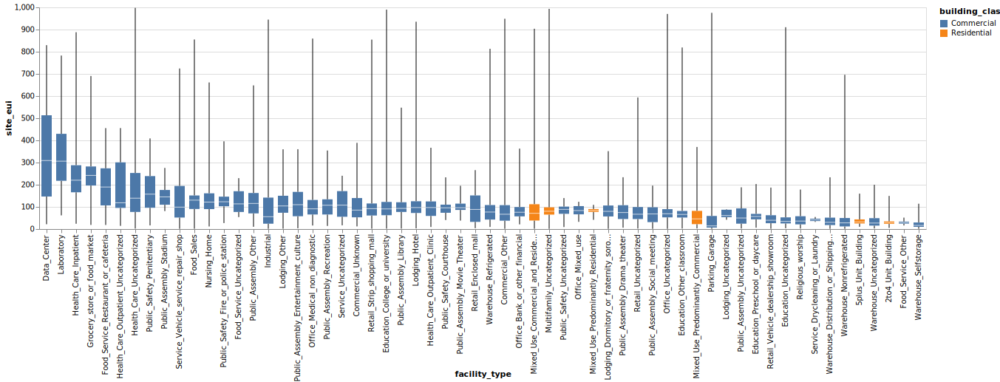
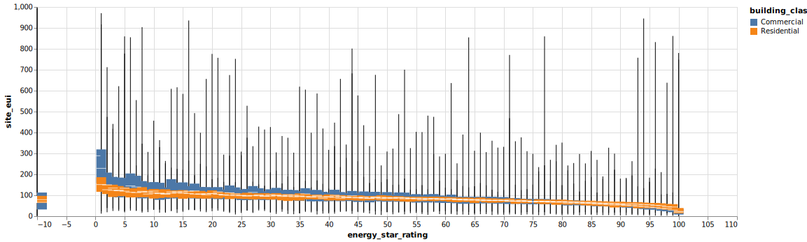
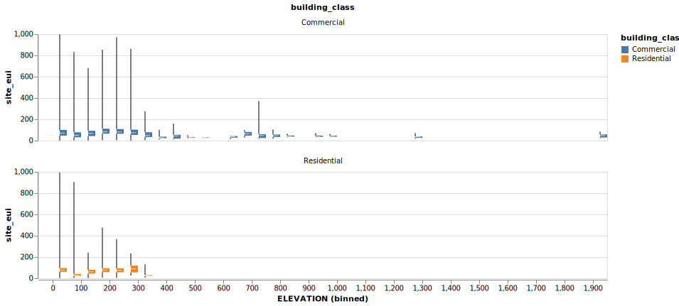
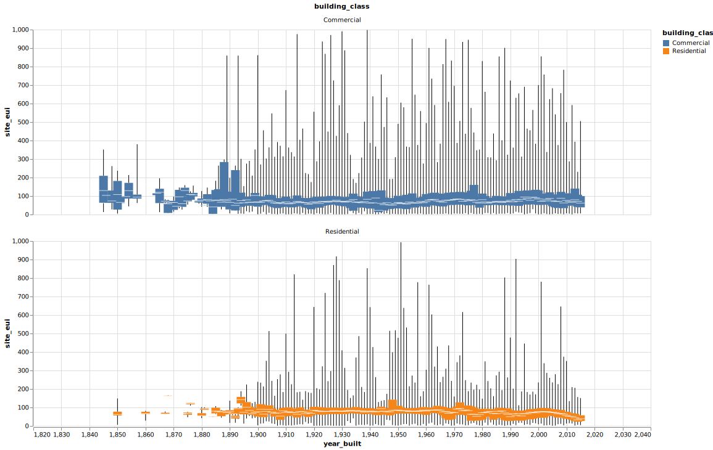

EDA on Python
Contents
EDA on Python¶
Data Import¶
For basic data profile, please check out Profile Report
import pandas as pd
import altair as alt
from altair_saver import save
alt.data_transformers.disable_max_rows();
alt.data_transformers.enable('data_server');
alt.renderers.enable('mimetype');
alt.renderers.enable('altair_saver', fmts=['vega-lite', 'svg']);
train_df = pd.read_csv('data/widsdatathon2022/train.csv')
train_df.head()
| Year_Factor | State_Factor | building_class | facility_type | floor_area | year_built | energy_star_rating | ELEVATION | january_min_temp | january_avg_temp | ... | days_above_80F | days_above_90F | days_above_100F | days_above_110F | direction_max_wind_speed | direction_peak_wind_speed | max_wind_speed | days_with_fog | site_eui | id | |
|---|---|---|---|---|---|---|---|---|---|---|---|---|---|---|---|---|---|---|---|---|---|
| 0 | 1 | State_1 | Commercial | Grocery_store_or_food_market | 61242.0 | 1942.0 | 11.0 | 2.4 | 36 | 50.5 | ... | 14 | 0 | 0 | 0 | 1.0 | 1.0 | 1.0 | NaN | 248.682615 | 0 |
| 1 | 1 | State_1 | Commercial | Warehouse_Distribution_or_Shipping_center | 274000.0 | 1955.0 | 45.0 | 1.8 | 36 | 50.5 | ... | 14 | 0 | 0 | 0 | 1.0 | NaN | 1.0 | 12.0 | 26.500150 | 1 |
| 2 | 1 | State_1 | Commercial | Retail_Enclosed_mall | 280025.0 | 1951.0 | 97.0 | 1.8 | 36 | 50.5 | ... | 14 | 0 | 0 | 0 | 1.0 | NaN | 1.0 | 12.0 | 24.693619 | 2 |
| 3 | 1 | State_1 | Commercial | Education_Other_classroom | 55325.0 | 1980.0 | 46.0 | 1.8 | 36 | 50.5 | ... | 14 | 0 | 0 | 0 | 1.0 | NaN | 1.0 | 12.0 | 48.406926 | 3 |
| 4 | 1 | State_1 | Commercial | Warehouse_Nonrefrigerated | 66000.0 | 1985.0 | 100.0 | 2.4 | 36 | 50.5 | ... | 14 | 0 | 0 | 0 | 1.0 | 1.0 | 1.0 | NaN | 3.899395 | 4 |
5 rows × 64 columns
EDA¶
Facility type¶
Commercial buildings has higher Energy Use Intensity (EUI) than residential building in general.
train_df.groupby(['facility_type', 'building_class']).mean()['site_eui'].sort_values(ascending = False).head(10)
facility_type building_class
Data_Center Commercial 339.734876
Laboratory Commercial 329.448470
Health_Care_Inpatient Commercial 248.340597
Grocery_store_or_food_market Commercial 241.135162
Food_Service_Restaurant_or_cafeteria Commercial 195.593925
Health_Care_Outpatient_Uncategorized Commercial 189.892345
Health_Care_Uncategorized Commercial 183.945201
Public_Safety_Penitentiary Commercial 170.904892
Public_Assembly_Stadium Commercial 157.041663
Service_Vehicle_service_repair_shop Commercial 137.595749
Name: site_eui, dtype: float64
sorted_mean = train_df.groupby('facility_type').mean('site_eui').sort_values('site_eui', ascending = False).index
alt.Chart(train_df).mark_boxplot(extent="min-max").encode(
x=alt.X(
"facility_type",
sort=list(sorted_mean)
),
y="site_eui:Q",
color="building_class",
)

Energy star rating¶
Energy star rating is highly correlated to EUI
alt.Chart(train_df).mark_boxplot(extent="min-max").encode(
x=alt.X(
"energy_star_rating",
),
y="site_eui:Q",
color="building_class",
).properties(width=1000)

Elevation¶
Elevation does not correlate much with EUI.
How can we make use of this data?
## Do a Binning
alt.Chart(train_df).mark_boxplot(extent="min-max").encode(
x=alt.X(
"ELEVATION",
bin=alt.Bin(maxbins=50)
),
y="site_eui:Q",
color="building_class",
tooltip=["count()"],
facet=alt.Facet('building_class:N', columns=1),
).properties(height= 150, width=800)

Built year¶
Residential buildings are less vary than Commercial Building.
New residential buildings built after 2000 has obvious EUI drop
## Do facat
alt.Chart(train_df.query('year_built >= 1840')).mark_boxplot(extent="min-max").encode(
x=alt.X(
"year_built",
scale=alt.Scale(domain=[1840, 2020])
),
y="site_eui:Q",
color="building_class:N",
facet=alt.Facet('building_class:N', columns=1)
).properties(width=1000)#.configure_mark(
# opacity=0.8,
#)
